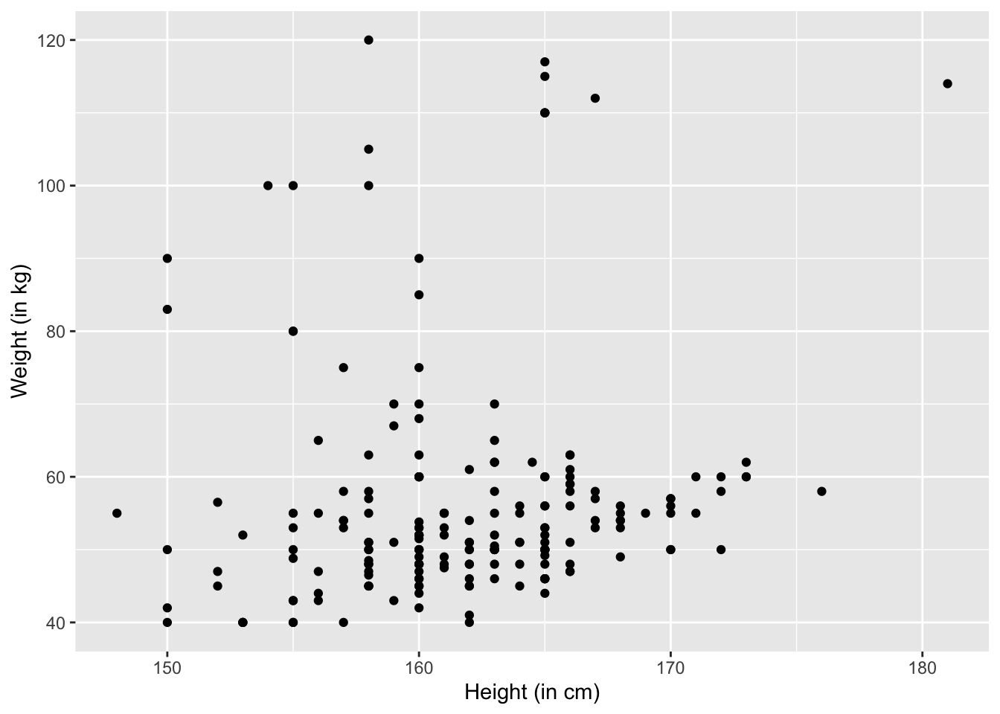
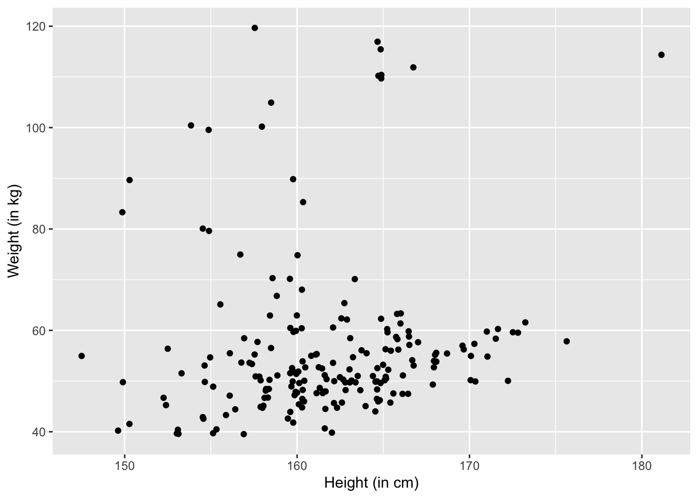
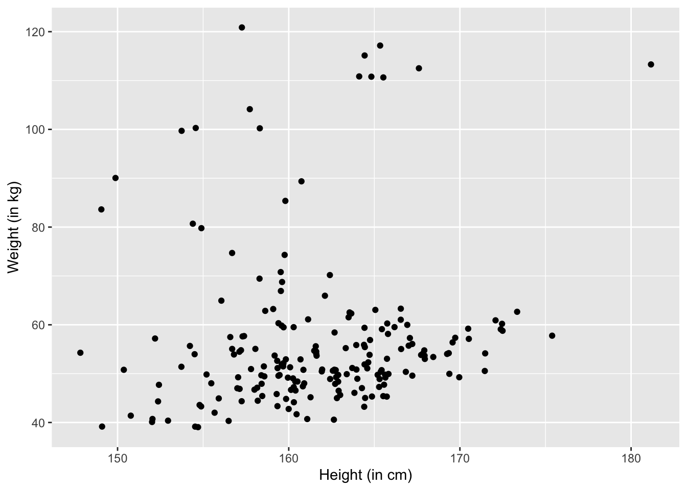
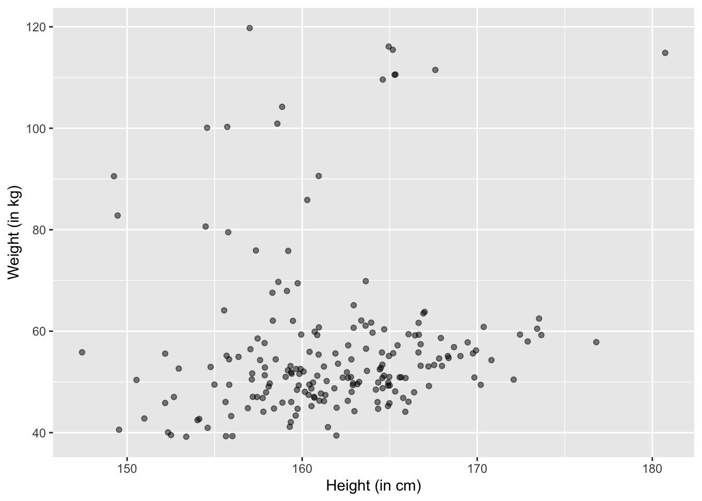

This post is based on the book of Think Stats 2e by Allen B. Downey.
Load package and data:
library(ggplot2)
df <- read.csv("../../../../static/files/selfie-data.csv")Scatter plot
ggplot(df, aes(x=height, y=weight)) +
geom_point() +
xlab("Height (in cm)") +
ylab("Weight (in kg)")
The problem is that people might round their weight and height off. For example, 164.5 cm will be rounded as 165 cm. To reverse the rounding effect, we can add some random noise. This procudure is called jittering.
We can define a jitter function by ourselves:
MyJitter <- function(values, jitter = 0.5) {
n <- length(values)
return(runif(n, -jitter, +jitter) + values)
}The MyJitter function takes in two parameters: values and jitter. values is a vector. jitter is a number, whose default is \(0.5\). The function returns a vector.
Then, apply it:
ggplot(df, aes(x=MyJitter(height), y=MyJitter(weight))) +
geom_point() +
xlab("Height (in cm)") +
ylab("Weight (in kg)")
We can change the jitter to be \(1\):
ggplot(df, aes(x=MyJitter(height,1), y=MyJitter(weight,1))) +
geom_point() +
xlab("Height (in cm)") +
ylab("Weight (in kg)")
Remember that jittering is good for visualizations but in the actual data analysis, we want to analyze the original data.
Even with jittering, the scatter plot has some issues. For example, some points get overlapped in crowded areas. This will give outliers lots of highlights that they don’t deserve. This is because, for example, in a crowded point there might be 10 overlapping points but we nonetheless consider it as important as an outlier that also occupy one point. This effect is called saturation.
To solve this problem, we can set the alpha parameter, basically making the points transparent. If two points overlap, we make that place darker. That is to say, the color corresponds to the density.
The lower the alpha, the lighter the colors. If alpha is \(1\), that equals to without applying alpha.
Let’s try alpha = 0.5:
ggplot(df, aes(x=MyJitter(height,1), y=MyJitter(weight,1))) +
geom_point(alpha = 0.5) +
xlab("Height (in cm)") +
ylab("Weight (in kg)")
We are interested in whether height and weight covary, i.e., vary together. When they say they covary, we mean that increases in height correspond to increases in weight, and vice versa. The question is, how do we quantify this relationship? Also, what do we mean by “increases”? Increases compared to what? What is the baseline?
The baseline may be \(0\), or the mean, mode, or median of the vector of \(X\) or \(Y\). It can also be \(100\), \(1000\), or even a million. But I guess the mean, or the average, should be an intuitive solution. Let’s use the mean first, and we’ll revisit later regarding whether we can use other baselines.
Okay. We now set the baseline to be the mean of a vector. When I say vector, I simply mean the array of values of \(X\) or \(Y\).
Now that we solved the question of what baseline we use. Let’s solve the first question: how to quantify the relationship.
Let’s use \(dx_i = x_i - \bar{x}\) to denote the deviation of \(x_i\) from the mean. Same for \(dy_i = y_i - \bar{y}\). According to the definition of covary above, i.e., “vary together”, we know that the sign, i.e., positive or negative, and the value of \(dx_i\) and \(dy_i\) should be related.
Let’s first solve the problem of sign. It’s easy to solve: we can simply use \(dx_i \times dy_i\). This way, if the two have the same sign, then the product is positive; otherwise negative. Surprisingly, \(dx_i \times dy_i\) solves the problem of value as well. THis is because, the higher the value of \(dx_i\) and \(dy_i\), the higher the value of their product. Depending on the sign of their product, we can know whether, and by how much, they “vary together”.
But when we talk about covary, we are talking about two vectors, or arrays: \(X\) and \(Y\). That’s easy to solve: we can add up all \(dx_i \times dy_i\), and then take the average of the sum.
Therefore, for two vectors of \(X\) and \(Y\), we can measure their covariance this way:
\[Cov(X,Y) = \frac{1}{n}\sum dx_i dy_i\]
where \(n\) is the length of \(X\) and \(Y\). BTW, \(X\) and \(Y\) have to be of the same length; otherwise, we cannot compute their covariance.
Also, when we want to extrapolate our knowledge about our sample to the population where the sample is drawn from, we’ll use Bessel’s Correction:
\[Cov(X,Y) = \frac{1}{n -1}\sum_{i=1}^n dx_i dy_i\]
Now, let’s write a function to compute the covriance of two arrays.
MyCov <- function(x,y){
x_length <- length(x)
y_length <- length(y)
if(x_length != y_length){
message("Arrays should have the same length!")
}
sum_init <- 0 # initiate the sum
for (i in 1:x_length) {
dxi = x[i] - mean(x)
dyi = y[i] - mean(y)
sum_init = sum_init + dxi * dyi
}
return(sum_init/(x_length-1))
}If you happen to know linear algebra, you’ll know that \(\sum dx_i dy_i\) is the dot product of \(dx\) and \(dy\). So we can also define our function this way:
MyCov <- function(x,y){
x_length <- length(x)
y_length <- length(y)
if(x_length != y_length){
message("Arrays should have the same length!")
}
x_means = rep(mean(x), times = x_length) # a vector of the mean of x
y_means = rep(mean(y), times = x_length) # a vector of the mean of y
d_x = x - x_means # a vector of deviations for x
d_y = y - y_means # a vector of deviations for y
return(sum(d_x * d_y) / (x_length-1))
}Let’s test whether our function works:
MyCov(df$height, df$weight) == cov(df$height, df$weight)## [1] TRUEThere is a problem with covariance: we don’t know how to interpret it. For example, the covariance for height and weight in the data is
MyCov(df$height, df$weight)## [1] 9.015824But, how would you interpret it? Is it large or small?
Another problem is that covariance is very sensitive to units: If we measure something using another unit, the covariance will change. For example, if we measure weight in lbs rather than kg:
weight_in_lbs = df$weight *2.21
MyCov(df$height, weight_in_lbs)## [1] 19.92497We can see that the covariance changed.
To solve this problem, instead of using simply \(dx_i\), we can divide it by the standard deviation of \(X\), denoted as \(S_X\). Same for \(dy_i\). Then, this “standardized” covariance, or “Pearson’s correlation”, denoted as \(\rho\) will become:
\[\rho = \frac{1}{n-1} \sum_{i=1}^n \frac{dx_i}{S_X} \frac{dy_i}{S_Y}\] Which can be written as:
\[\rho = \frac{Cov(X,Y)}{S_X S_Y}\] or:
\[\rho = \frac{Cov(X,Y)}{\sqrt{Var(X)Var(Y)}}\]
This \(\rho\), i.e., Pearson’s correlation coeffience, is always between \(-1\) and \(1\), which makes it perfect to measure the relationship between two variables.